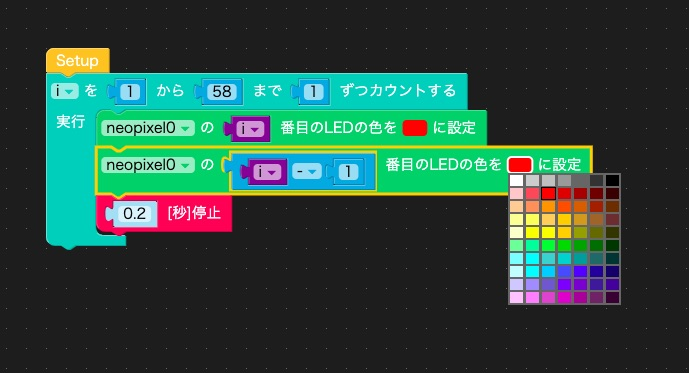

M5StackやM5StickCを使って、いろいろなものを作ったり、面白いものを作っている人を紹介したりするコーナー「M5Stackカフェ」。 第2回はM5StickCを使ってクリスマスの飾りつけをします。
クリスマスといえば赤と緑に輝くイルミネーション（かなり強引ですが）。 M5Stackの拡張モジュールには「M5Stack用NeoPixel互換 LEDテープ」という、いろいろな色に光るLEDがテープ状に並んだものがあります。 今回はこれを使ってクリスマス・イルミネーションを作ってみます。
LEDテープをM5StickCにつないで、プログラムでクリスマスカラーに光らせます。M5Stack用LEDテープには10cm、20cm、50cm、1m、2mのものがあります。作るイルミネーションに合わせて適切な長さのものを選べばいいと思いますが、今回は実験として20cmのものを2本使いました。
M5Stack用LEDテープは一方の端に「A」と書かれています。この「A」とM5StickCをGroveケーブルでつなぎます。反対側の「B」と次のLEDテープの「A」をGroveケーブルでつなぐことで2本のLEDテープを連結して使うことができます。
M5StickCにLEDテープをつないだだけでは何もおこりません。プログラムを作ってM5StickCやLEDテープを制御する必要があります。
M5StackやM5StickCを制御するプログラムはいくつかの方法で作れます。その中で、比較的簡単にプログラムが作れるUIFlow(Blockly)を使います。UIFlow(Blockly)を使う準備方法は第1回の記事をご覧ください。
UIFlowはWi-FiでM5StickCにプログラムを転送できるので、USBケーブルでM5StickCとパソコンをつなぐ必要はありませんが、しばらくM5StickCを触っていなかったら、充電も兼ねてUSBケーブルでM5StickCとパソコンをつなぎましょう。
M5StickCの左側面のスイッチを押すと、M5StickCがリセットされ、Wi-Fiに接続し、APIキーが表示されます。APIキーが表示されない時は、 第1回の記事に沿ってM5StickCを初期設定してください。
次にパソコンのブラウザで次のアドレスにアクセスします。
ブラウザ画面左下のApi keyに、M5StickCの画面に表示されているAPIキーと同じものが表示されていることを確認します。Api keyが同じでない場合は、Api keyの欄をクリックして、M5StickCの画面に表示されているAPIキーを入力してください。Api keyの右の欄が[接続済み]になっていることを確認します。なっていない場合は、さらに右の更新ボタンをクリックして、UIFlowとM5StickCを接続します。

これでM5StickCのプログラムを作る準備は完了です。
これから新しいプログラムを作っていくので、画面左上の「プロジェクト」と書かれた右側の「main」の部分を「2_XmasIllumination」に変えておきましょう。
次に「Units」を選択して、「＋」をクリックし、「RGB LED」を選択します。「port」はGroveポートの選択で、M5StickC本体にはAポートがついているので、「A」のままで大丈夫です。「count」はLEDテープについているLEDの個数を入力します。20cmのLEDテープには29個のLEDがついているので、1本つないでいるなら29と入力します。2本連結しているなら58と入力してください。
「Units」メニューの「Neopixel」の「neopixel0の 1 番目のLEDの色を□に設定」ブロックを右側のプログラムエリアにドラッグ&ドロップします。
このブロックを「Setup」ブロックの下につけて、次の図のようにしたら、UIFlow画面の右上の右三角（実行ボタン）をクリックしてください。UIFlowがM5StickCに接続できない場合は、M5StickCの左側面のボタンを押して、M5StickCをリセットし、液晶画面にAPIキーが表示されたらもう一度UIFlowの実行ボタンをクリックしてください。
LEDテープのM5StickCに一番近いLEDが一つ赤く点灯したのが確認できます。ブロックの「1」を別の数字に置き換えて、実行ボタンをクリックして、数字で指定した位置のLEDが点灯するのを確認してください。
「何番目の」という数字を手で書き換える代わりに、プログラムで変えてみましょう。そのためには数字の部分を「変数」に変えて、その変数をプログラムで変化させます。
真ん中の「ループ」メニューから「iを□から□まで□ずつカウントする」というブロックを選択します。さらに「数学」メニューに「1」というブロックがあるので、それを3回ドラッグ&ドロップして、ループから選択したブロックにはめ込み、「iを1から58まで1ずつカウントする」にします。「変数」メニューから「i」というブロックを選択し「neopixel0の 1 番目のLEDの色を□に設定」の「1」の部分にはめ込みます。この「neopixel0…」ブロックを「カウント」ブロックの実行と書かれた部分にはめ込みます。少しゆっくり変化させたいので、「タイマー」メニューから「1[秒]停止」ブロックを選択し、中の数字を0.2にして、「neopixel0…」ブロックに下につけて、次の図のようにします。
実行ボタンを押して、様子を見てみましょう。
想像した通りになったでしょうか？数字を手で変えてLEDを点けたときは、その数字のLEDだけが点灯しましたが、今度はM5StickCに近いところから1つ、2つと赤く光るLEDが増えていき、最後は全部のLEDが点灯しました。LEDテープは「1番目を赤く光らせる」と設定すると、「消せ」という設定をしない限りずっとその色で光り続けるのですね。数字を手で変えてLEDを点けたときは、「Setup」ブロックの中で最初に全てのLEDを消してくれていたので、指定したLEDだけが光っていました。
では、順番に1つだけのLEDが光るようにプログラムを修正してみましょう。そのためには、「i番目のLEDを赤く」したあとに、一つ手前の「i - 1番目のLEDを黒く」設定します。 LEDの色の部分をクリックするとカラーパレットが現れるので、設定したい色を選択します。 「i - 1」番目は、「数学」メニューの「□ ＋ □」ブロックを使い、最初の□に「i」を入れ、「＋」を「−」に変え、次の□に「1」を入れます。プログラムは次のようになります。

実行してみると、順番に1つだけのLEDが光るのが確認できます。
LEDテープの使い方が分かってきたので、いよいよクリスマス・イルミネーションを作ってみましょう。LEDを赤と緑に交互に点灯させると、それらしくなるはずです。
まず、1番目、3番目、5番目、つまり奇数番目のLEDを赤に、偶数番目のLEDを緑にしてみます。
先程のプログラムを参考に、「iを1から58まで2ずつカウントする」というループを作ります。するとiは1、3、5…と変化していきます。「i番目のLEDを赤く設定」し、「i + 1番目のLEDを緑に設定」します。
実行すると、奇数番目のLEDが赤、偶数番目のLEDが緑になります。これだけだと変化がないので面白くありません。赤と緑が交互に入れ替わるようにしてみましょう。
奇数番目のLEDを赤、偶数番目を緑にしたら、0.5秒待つように、「タイマー」メニューから「1[秒]停止」ブロックを選び、ループの下に付け、数字を0.5にします。
次に奇数番目を緑、偶数番目を赤にするループを作るのですが、最初のループを右クリックするとメニューが現れるので、その中から「複製」を選ぶと、ブロックの塊が複製されます。
色を奇数番目を緑、偶数番目を赤に変え、こちらの下にも「0.5秒停止」ブロックをつけます。全体を「ずっと」ブロックで囲むと、赤と緑を交互に0.5秒ずつ繰り返すプログラムになります。
実行ボタンをクリックして、動作を確認してください。交互に赤と緑に光るクリスマスイルミネーションが出来ました。
赤と緑が入れ替わる時間は「0.5[秒]停止」という2つのブロックで指定しています。この時間を変えることで赤と緑が入れ替わるタイミングを調整できます。こういうときは2つの「0.5[秒]停止」ブロックの数字を直接書き換えてもいいのですが、停止する時間を変数、例えば「pauseT」にして、「pauseT[秒]停止」に変更し、プログラムの先頭でpauseTの値を設定すると、変更が1か所で済みます。

赤と緑が入れ替わる時間をいろいろと変えて、好みの時間を見つけてみてください。
話が長くなってきたので、今回はこのくらいにします。作ったプログラムはUIFlowの下のフロッピーのアイコンをクリックして保存しておきましょう。プロジェクト名（2_XmasIllumination）に「.m5f」を付けたファイル名でダウンロードフォルダに保存されます。
LEDテープという、いろいろな色に光るLEDが並んだテープを使って、クリスマスの飾りを作ってみました。LEDテープのマニュアルを探さなくてもプログラムが作れるのがUIFlowの便利なところです。お正月の飾りもLEDテープを使って作ってみようかな？松飾り？鏡もち？どれもLEDテープ向きじゃありませんね…